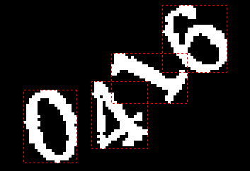

| 命令名称 | Incise_ConnectedArea 连通区域切割 |
| 命令功能 | 连通区域字符切割 |
| 语法格式 | CharNum = TURING.Incise_ConnectedArea(through, Width, Height, Flag) |
| 参数说明 |
through：布尔型，是否八通方向（八向：True） Width：字符串型，可选，保留字符切割宽度范围（例："50-150"）。 Height：字符串型，可选，保留字符切割高度范围（例："30-100"）。 Flag：整数型，可选，排序规则（默认0横向书写顺序，1从左到右，3纵向书写顺序 |
| 返回值 | CharNum：整数型，字符切割数量(最大下标值) |
| 按键精灵 |
复制代码
'获取屏幕图像数据
Call TURING.Pixel_FromScreen(0,0,200,100)
'二值化处理
Call TURING.Filter_Binaryzation("0-128")
'显示获取的图像
Call TURING.Pixel_Preview()
'连通区域切割字符
数量 = TURING.Incise_ConnectedArea(False)
For i = 0 To 数量
'字符预览
Call TURING.Incise_Preview(i)
Next
|
| 切割效果 |  |